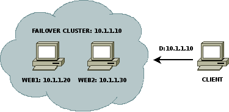
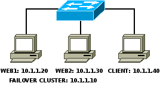

Failover cluster s protokolom CARP
Cluster je skupina navzájom úzko spolupracujúcich počítačov, ktoré sú okolitým svetom často vnímané ako jediný počítač. Vytvára sa v prípadoch, keď je nutné zabezpečiť nepretržitú dostupnosť systému (High-availability alebo tiež Failover cluster), rozdeliť záťaž na viacero počítačov (Load-balancing cluster) alebo spojiť výpočtový výkon viacerých počítačov (High-performance computing cluster). Ako už názov článku napovedá, úlohou nasledujúceho textu je priblížiť implementáciu jednoduchého failover cluster-a s využitím protokolu CARP.
1. Motivácia
Nároky na dostupnosť služieb poskytovaných počítačovými systémami sú v každej organizácii špecifické a líšia sa prípad od prípadu. Pre niektoré spoločnosti môže byť napríklad akceptovateľný celodenný výpadok webu, pre iné pár minút nedostupnosti tejto či inej služby môže znamenať vážne straty. Pri zvlášť kritických službách je vhodné implementovať redundantné riešenie a tou správnou cestou môže byť práve spomínaný failover cluster. Cluster je však len čiastočným riešením problému, pretože okrem “zdvojenia” kritického systému je nutné zabezpečiť napríklad aj nepretržitý prívod elektrickej energie, záložnú sieťovú konektivitu a mnoho ďalších vecí, ktoré v konečnom dôsledku môžu spôsobiť to isté, čo chyba hardvéru.
2. CARP
Protokol CARP (Common Address Redundancy Protocol) je bezpečnou a voľne dostupnou alternatívou k protokolom VRRP (Virtual Router Redundancy Protocol) a HSRP (Hot Standby Router Protocol). Dovoľuje viacerým systémom z tzv. “redundantnej skupiny” zdieľať v lokálnej sieti rovnakú IP adresu. Jeden systém z tejto skupiny je považovaný za “hlavný” (angl. master) a ostatné za “zálohy” (angl. backups). Za normálnych okolností používa zdieľanú IP adresu iba hlavný systém a obsluhuje všetky požiadavky, ktoré sú na ňu smerované. Ak by však tento systém z ľubovoľných príčin prestal reagovať, začne zdieľanú IP adresu používať jeden zo záložných systémov v závislosti od jeho priority.
Tento protokol je jednou z mnohých technológií, ktoré dala svetu skupina vývojárov zoskupená okolo systému OpenBSD. Jeho port pre ostatné systémy, medzi ktoré patrí samozrejme aj GNU/Linux sa volá UCARP a je k dispozícii na webovej stránke ucarp.org.
3. Modelové situácie
Predpokladajme, že máme k dispozícii dva počítače WEB1 a WEB2, ktoré chceme použiť na vytvorenie failover cluster-a, a preto sme ich nakonfigurovali tak, aby pomocou protokolu HTTP sprístupňovali rovnaké informácie. Počítaču s názvom WEB1 sme pridelili IP adresu 10.1.1.20 a počítaču s názvom WEB2 IP adresu 10.1.1.30. Pre ostatné systémy vrátane znázorneného klienta chceme tento cluster sprístupniť pod zdieľanou IP adresou 10.1.1.10. Nie je nutné a ani žiaduce, aby klient poznal IP adresu jednotlivých členských systémov. Stačí, keď pozná zdieľanú IP adresu celého cluster-a.
V modelovej situácii A sa budeme snažiť o konfiguráciu, pri ktorej majú oba počítače rovnakú prioritu a hlavným systémom môže byť ktorýkoľvek z nich. Implementáciu takéhoto riešenia je vhodné zvážiť v prípade, že máme k dispozícii rovnako výkonné počítače a nezáleží nám na tom, ktorý z nich je hlavným systémom.
V modelovej situácii B vytvoríme konfiguráciu, pri ktorej počítač WEB1 bude za každých okolností preferovaný ako hlavný systém a počítač WEB2 ho nahradí len počas jeho nedostupnosti. Takáto konfigurácia je výhodná, keď máme výkonný počítač “poistený” menej výkonným.

Jednou z hlavných výhod riešenia failover cluster-a s protokolom CARP je, že nevyžaduje žiadne dodatočné sieťové prepájanie členských systémov. Je tomu tak najmä vďaka skutočnosti, že všetky informácie o aktuálnom stave cluster-a, ktoré si medzi sebou tieto systémy vymieňajú, sú po sieti prenášané šifrované. Preto môžu byť všetky tri opisované počítače pripojené na jediný switch, ako je znázornené na nasledujúcom obrázku.

V tomto zapojení by malo byť možné pripojiť sa z klientskeho počítača priamo na WEB1 i WEB2 a po nainštalovaní a nakonfigurovaní balíka ucarp bude možné pripájať sa aj priamo na zdieľanú IP adresu, ktorú bude používať jeden z dvoch členov cluster-a.
4. Inštalácia balíka ucarp
Ak používate distribúciu Ubuntu, môžete nainštalovať balík ucarp zo skupiny universe príkazom:
$ sudo apt-get install ucarp
Pokiaľ používate inú distribúciu a balík ucarp sa v nej nenachádza, môžete ho zostaviť zo zdrojových kódov napríklad spustením nasledujúcich príkazov:
# wget http://download.pureftpd.org/pub/ucarp/ucarp-1.2.tar.gz
# tar xfz ucarp-1.2.tar.gz
# cd ucarp-1.2
# ./configure
# make install-strip
V tomto prípade bude výsledný binárny súbor umiestnený do adresára /usr/local/sbin.
5. Konfigurácia programu ucarp
Konfigurácia programu ucarp je veľmi jednoduchá. Tento program nepoužíva žiadny konfiguračný súbor, ale preberá všetky parametre z príkazového riadku. Ešte pred samotným spustením programu je však potrebné vytvoriť dva shell skripty.
Prvý z nich je vykonávaný, keď počítač prejde do stavu master.
Tento skript by teda mal obsahovať pridanie zdieľanej IP adresy na sieťové rozhranie a poprípade aj odoslanie e-mailu správcovi systému.
Zvyčajne tento skript ukladám do súboru /usr/local/bin/carp-up.sh a pre opisovanú modelovú situáciu by mal nasledovný obsah:
#!/bin/bash
/sbin/ifconfig eth0:0 10.1.1.10 netmask 255.255.255.0 up
echo "Prebehla zmena master hostu failover cluster-a" | /usr/bin/mail -s Cluster spravca@mail.local
Druhý skript je vykonávaný v prípade, že počítač prejde zo stavu master do stavu backup.
Zvyčajne tento skript ukladám do súboru /usr/local/bin/carp-down.sh a úplne stačí keď obsahuje uvoľnenie zdieľanej IP adresy:
#!/bin/bash
/sbin/ifconfig eth0:0 down
Oba skripty môžu byť na všetkých členských systémoch rovnaké. Rozdiel je len v parametroch, s ktorými sa spúšťa program ucarp.
V modelovej situácii A spustíme na počítači WEB1 program ucarp príkazom:
# ucarp --interface=eth0 --vhid=42 --pass=heslo --addr 10.1.1.10 --srcip 10.1.1.20 --upscript=/usr/local/bin/carp-up.sh --downscript=/usr/local/bin/carp-down.sh --daemonize
Na počítači WEB2 spustíme program ucarp príkazom, ktorý sa od predchádzajúceho líši iba IP adresou systému:
# ucarp --interface=eth0 --vhid=42 --pass=heslo --addr 10.1.1.10 --srcip 10.1.1.30 --upscript=/usr/local/bin/carp-up.sh --downscript=/usr/local/bin/carp-down.sh --daemonize
Parameter interface určuje sieťové rozhranie, ktoré má program využívať na výmenu informácii o stave cluster-a.
Parameter vhid a pass musia byť na všetkých členských systémoch zhodné, pretože určujú identifikátor cluster-a a heslo, ktoré je použité pri šifrovaní komunikácie medzi jednotlivými členskými systémami.
Parametrami upscript a downscript sú určené shell skripty spúšťané pri prechode členského systému medzi stavmi backup a master.
Posledný parameter daemonize zabezpečuje daemonizáciu procesu, a teda okrem iného aj uvoľnenie terminálu, na ktorom bol program spustený.
Pri takejto konfigurácii sa hlavným systémom stane počítač, na ktorom bude program ucarp spustený skôr. Pre názornosť predpokladajme, že to bude počítač WEB1. V prípade, že tomuto počítaču odpojíme sieťový kábel, prejde do stavu master počítač WEB2. Počítač WEB1 po obnovení pripojenia zistí, že sa na sieti už nachádza hlavný systém s rovnakou prioritou (WEB2) a prejde do stavu backup. Do stavu master prejde až pri budúcom výpadku aktuálneho hlavného systému, ktorým je v tomto prípade WEB2.
V modelovej situácii B spustíme na preferovanom systéme WEB1 program ucarp príkazom:
# ucarp --interface=eth0 --vhid=42 --pass=heslo --addr 10.1.1.10 --srcip 10.1.1.20 --advskew=0 --advbase=1 --preempt --upscript=/usr/local/bin/carp-up.sh --downscript=/usr/local/bin/carp-down.sh --daemonize
Parametre advskew a advbase určujú okrem iného aj prioritu členského systému.
Podľa dokumentácie k implementácii protokolu CARP v systéme OpenBSD má vzorec na výpočet priority tvar (advskew/256)+advbase a preferovaný je systém s najnižším výsledkom.
Parameter preempt zabezpečuje akceptovanie takto určenej priority a striktné preferovanie členského systému s najnižším výsledkom.
Význam ostatných parametrov je rovnaký ako pri modelovej situácii A.
Keďže počítač WEB2 chceme používať ako záložný systém, prispôsobíme tomu hodnotu parametra advskew a program ucarp na ňom spustíme príkazom:
# ucarp --interface=eth0 --vhid=42 --pass=heslo --addr 10.1.1.10 --srcip 10.1.1.30 --advskew=50 --advbase=1 --preempt --upscript=/usr/local/bin/carp-up.sh --downscript=/usr/local/bin/carp-down.sh --daemonize
Pri takejto konfigurácii nezáleží na tom, či bol program ucarp na niektorom počítači spustený skôr alebo neskôr. Hlavným systémom bude vždy počítač WEB1. Ak ho odpojíme od siete, prejde do stavu master počítač WEB2. Ak WEB1 pripojíme späť, WEB2 sa okamžite vráti do stavu backup. Po pripojení preferovaného systému sa však pravdepodobne prejaví dočasné obmedzenie jeho konektivity ako dôsledok skutočnosti, že tento systém nevyšle do lokálnej siete gratuitous ARP obežník. Tento výpadok by však nemal trvať viac než minútu, kým v ARP cache okolitých systémov neexspiruje záznam vytvorený v dôsledku predchádzajúcej komunikácie so záložným systémom.
Na existenciu tohto problému som sa už dva krát pokúšal upozorniť autora programu ucarp, no zatiaľ sa mi s ním nepodarilo nadviazať kontakt. V dohľadnej dobe sa preto chystám pripraviť patch, ktorý zabezpečí vyslanie spomínaného ARP obežníka a následne by som chcel tému prebrať s vývojármi referenčnej implementácie v systéme OpenBSD, ktorá bohužiaľ trpí rovnakým nedostatkom.
6. Záver
Riešenie failover cluster-a s protokolom CARP má voči konkurenčným riešeniam výhodu najmä vďaka jednoduchosti implementácie a faktu, že komunikácia medzi jednotlivými členskými systémami cluster-a je šifrovaná.
Failover cluster je však možné okrem zvyšovania dostupnosti použiť aj pri zvyšovaní bezpečnosti sieťových riešení. Implementácia s protokolom CARP dáva napríklad aj možnosť vytvorenia redundantnej skupiny firewallov s odlišnými operačnými systémami. Situácia, keď sa útočníkovi podarí prelomiť bezpečnostné bariéry linuxového firewallového systému, tak môže byť veľmi jednoducho vyriešená jeho vypnutím, ak jeho funkcie okamžite na seba preberie firewall s operačným systémom OpenBSD.